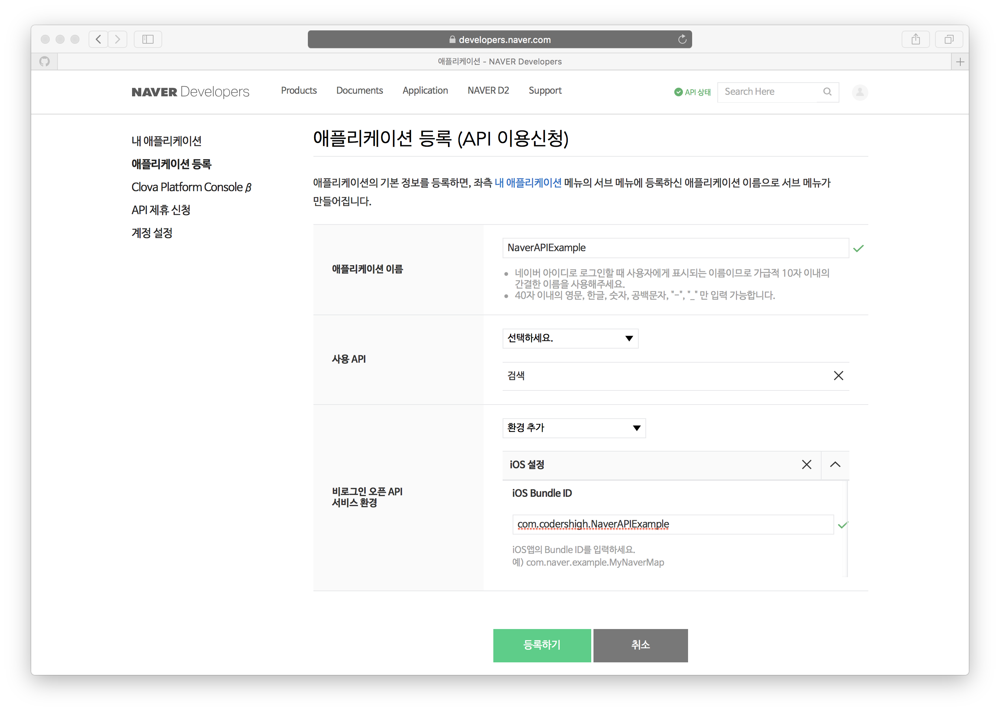
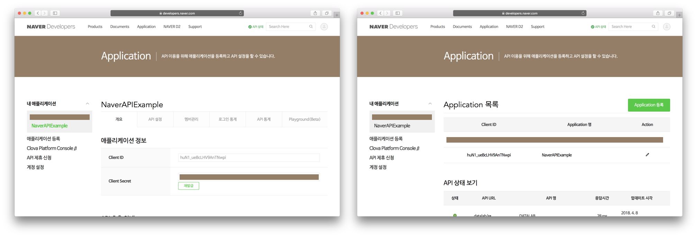

이번 기술 블로그에서는 네이버 개발자 센터에서 제공하는 네이버 오픈 API를 사용하는 방법에 대해서 알려드리고자 합니다. 오픈 API란, API 중에서 플랫폼의 기능 또는 콘텐츠를 외부에서 웹 프로토콜(HTTP)로 호출해 사용할 수 있게 개방(open)한 API를 의미합니다. 현재 네이버 오픈 API로 활용할 수 있는 기술에는 네아로(네이버 아이디로 로그인), 지도, 검색이 있으며, Clova의 음성 인식 기술과 음성 합성 기술, 얼굴 인식 기술, Papago의 기계 번역 기술 등이 있습니다.
에베베벱 여기설명넣어야할거가틍데ㅡㅡㅡㅡㅡㅡㅡㅡㅡㅡㅡㅡㅡㅡㅡㅡㅡㅡㅡㅡㅡㅡㅡㅡㅡㅡㅡㅡㅡㅡㅡㅡㅡㅡㅡㅡㅡㅡㅡㅡㅡㅡㅡㅡㅡㅡㅡㅡㅡㅡㅡㅡㅡㅡㅡㅡㅡㅡㅡㅡㅡㅡㅡㅡㅡㅡㅡㅡㅡㅡㅡㅡㅡㅡㅡㅡㅡㅡㅡㅡㅡ
이번 포스트에서는 영화 검색 애플리케이션을 만들 것입니다. 사용자로부터 영화 검색어를 입력받은 후, 네이버 오픈 API 호출을 통해 검색어와 일치하는 영화 정보를 불러와 테이블뷰에 표시합니다. 그리고 원하는 영화를 터치하면 각 영화의 세부 정보를 보여줍니다.
구현하고자 하는 핵심 기능은 네이버의 검색 API를 사용한 영화 검색 기능입니다. 영화 포스터 이미지 다운로드는 비동기 작업을 사용해 다운로드 작업을 뒤로 미루고, 포스터 이미지가 모두 다운로드 될 때까지 기다릴 필요 없이 바로 검색 결과를 확인할 수 있도록 테이블 뷰를 구성합니다. 마지막으로, HTTP Request를 사용하여 영화의 세부 정보를 보여주는 사파리 뷰를 구성합니다.
시작하기에 앞서 GitHub에서 스타터 프로젝트를 다운로드하여 각 단계를 따라가시면 됩니다. 프로젝트를 처음부터 만드시고 싶으신 분들은 아래 사진과 같이 UI를 구성하시면 됩니다. 프로젝트를 만드실 때에는 애플리케이션 이름과 애플리케이션 Bundle ID를 기억해 두었다가 오픈API 신청 시 기입하시기 바랍니다.
네이버 오픈 API를 사용하기 위해서는 네이버로부터 클라이언트 아이디와 클라이언트 시크릿을 발급받아야 합니다. 이는 네이버 오픈API 사용자가 인증된 사용자인지 확인하는 고유한 아이디와 비밀번호로, 네이버 개발자센터의 애플리케이션 등록 메뉴에서 애플리케이션을 등록하면 발급되는 값입니다.
위와 같이 애플리케이션 이름을 프로젝트명과 동일하게 작성한 다음, 사용 API를 검색으로 설정합니다. 마지막으로 비로그인 오픈API 서비스 환경에서 iOS 설정을 추가한 다음, Xcode 프로젝트 생성 시 애플리케이션의 Bundle ID를 정확하게 입력합니다.
애플리케이션 등록을 마치고 나면, 내 애플리케이션 항목 아래 등록한 애플리케이션의 목록이 나타납니다. 자신의 애플리케이션명을 클릭하면, 애플리케이션 정보가 나타나며, 자신의 클라이언트 아이디와 클라이언트 시크릿을 확인할 수 있습니다.
먼저, Model.swift를 만들어 Movie 클래스를 만들어 줍니다.
모든 속성은 Movie 객체를 생성한 후에 값을 입력해줄 것이기 때문에, Optional로 처리합니다.
두 번째는 SearchViewController.swift입니다.
먼저 SearchVC에서 MoviesTableVC로 향하는 segue를 연결해두고, '검색' 버튼을 눌렀을 때 segue를 실행합니다. prepareForSegue() 메소드에서는 MoviesTableVC의 queryText 필드에 텍스트 필드의 내용을 저장해줌으로써 다음 뷰로 검색어를 넘겨줍니다.
검색어를 입력 받고 결과를 표시하는 방법으로 뷰에 Search Bar를 만들어 두고 UISearchController를 이용하는 방법이 있습니다. 이 방법을 사용하면 한 개의 뷰에서 검색어를 입력하고 그 결과를 받아올 수 있습니다. 하지만 이번 블로그에서는 네이버 API를 사용하여 HTML 요청을 전송하는 방법에 초점을 맞추기 위해서 검색어를 입력하는 부분과 검색 결과를 출력하는 부분을 분리하였습니다. UISearchController에 대한 정보를 더 얻고 싶으시다면 Apple Developer 페이지를 참고하시기 바랍니다.
세 번째는 MoviesTableViewController.swift입니다.
우선, 위와 같이 MoviesTableViewController에게 XMLParserDelegate 프로토콜을 적용합니다.
다음으로 네이버 개발자 센터에서 발급받은 클라이언트 아이디와 클라이언트 시크릿을 변수에 저장합니다.
strXMLData에는 https://openapi.naver.com 에 요청한 쿼리에 대한 응답인 xml 데이터가 저장됩니다.
xml 데이터는 위와 같은 형식으로 이루어져 있습니다. 우리가 주의 깊게 볼 부분은 <item> 태그로 둘러싸여 있는 부분입니다. title, link, subtitle, pubDate, director, actor, userRating 등에 해당하는 내용을 element라고 부르며, 각 element는 <title>리틀 포레스트</title>과 같이 태그로 둘러싸여 있습니다. 이제 이 데이터를 Parse(분석, 또는 쪼갬)하여 Movie객체를 생성할 것입니다. currentTag는 현재 tag를 알려주는 변수이고, currentElement은 현재 element에 해당하는 데이터를 저장하게 될 변수입니다. item은 Movie의 객체로, 한 개의 item을 Parsing에 성공하면 하나의 객체가 완성되는 것입니다.
XML 문서 내의 데이터를 읽어내는 XML 파서는 SAX(XML용 간편 API) 타입과 DOM(문서객체모델) 타입이 있습니다.
SAX 타입의 파서는 이름 그대로 간단한 API를 제공하며, 순차적으로 XML 문서의 내용을 파싱합니다. iOS SDK에서 기본적으로 제공되는 클래스인 XMLParser가 SAX 타입의 파서입니다.
DOM 타입의 파서는 문서 전체를 읽어 메모리에 트리 구조로 올려 놓고 원하는 요소(Element)에 바로 접근할 수 있도록 만든 파서입니다. DOM 타입의 파서는 iPhone SDK의 파운데이션 프레임워크에 없습니다. 따라서 DOM 타입의 파서를 사용하기 위해서는 조금 더 하위 수준의 libxml2를 이용하거나, 외부 라이브러리를 이용해야 합니다.
SAX 타입은 XML 데이터를 순차적으로 읽어나가면서 원하는 요소를 걸러내도록 되어 있기 때문에 거추장스럽고 시간은 많이 걸리지만 사용하는 메모리 양은 적은 편이며, DOM 타입은 그 반대로 빠르지만 메모리를 많이 사용합니다. 이번 애플리케이션에서는 적은 메모리를 사용할 수 있도록 SAX 타입의 XMLParser를 사용하도록 하겠습니다.
MoviesTableViewController의 searchMovies() 메소드
10-12: 요청 텍스트를 담아 url을 생성합니다. Line 10의 코드를 작성하는 이유는 query 문자열 안에 url에 허용되지 않는 문자가 들어있을 때 인코딩을 통해서 HTTP 요청을 보낼 때 문제가 생기지 않도록 하는 것입니다.
14-17: URLRequest를 생성합니다. URL 요청에는 앞서 발급받은 클라이언트 아이디와 클라이언트 시크릿을 함께 전송합니다.
19-30: URL Connection Task를 생성합니다. 에러가 있거나, 데이터가 비어있으면 리턴합니다. 그리고 item을 초기화합니다.
42-49: parse() 메소드를 호출하여 xml parsing을 시작합니다. parse()메소드를 호출하게 되면, parserDidStartElement(), parserFoundCharacters(), parserDidEndElement() 메소드가 차례로 호출됩니다.
MoviesTableViewController의 parserDidStartElement() 메소드
이 메소드는 parser가 시작태그를 발견했을 때 호출됩니다. 태그는 elementName에 매개변수로 주어집니다. 태그가 title, link, image, pubDate, director, actor, 또는 userRating과 일치하면 currentElement를 초기화하고, 첫 번째 태그인 title과 일치하면 새로운 Movie 객체를 생성합니다.
MoviesTableViewController의 parserFoundCharacers() 메소드
이 메소드는 parserDidStartElement() 다음으로 호출됩니다. 시작 태그를 인식한 후 데이터를 읽었음을 의미하는데, 간단하게 currentElement에 string의 내용을 덧붙여줍니다.
MoviesTableViewController의 parserDidEndElement() 메소드
이 메소드는 parserFoundCharaters() 다음으로 호출되며, 끝 태그를 인식했다는 의미입니다. 이 메소드에서는 현재 태그에 해당하는 Movie의 속성을 지정해줍니다. 예를 들어, 을 발견했으면 item?.title = currentElement을 해줍니다. Line 3에서 replacingOccurrences를 해주는 것은 검색API에서 검색어와 일치하는 문자열을 볼드체 태그로 감싸서 응답을 주기 때문에 태그를 제거해 주는 작업입니다.
10-14와 15-19 같은 경우에는 다수의 인물을 구분하기 위해 "|" 문자를 구별자로 사용하는데, 문자열의 마지막에 불필요한 "|"를 삭제해주는 작업입니다.
20-25에는 item을 movies 배열에 추가해주고, 테이블뷰를 새로고침합니다. DispatchQueue.main.async에 대해서는 STEP 2 에서 다룹니다.
다음은 비동기 작업에 대해서 알아봅시다.
쇼핑 애플리케이션 사용 경험을 떠올려 보면, 테이블 뷰에 콘텐츠가 로딩된 후, 상품 이미지가 하나 둘 씩 나타나는 것을 보신 적이 있을 것입니다. 이는 웹으로부터 사진을 다운로드하느라 뷰가 늦게 로딩되는 것을 방지하기 위해서, 기본 이미지를 먼저 띄워 놓고, 백그라운드에서 이미지 다운로드가 완료되는 즉시 이미지를 뷰에 나타내는 것입니다. 따라서 비동기 작업 큐(Queue)에 사진 다운로드와 같은 작업을 넣어 두고, 뷰(UI)가 먼저 로딩된 후에 차례로 다운로드 작업을 완료해 나가는 것입니다.
이번 단계에서는 MoviesTableVC가 로딩된 이후에 차례로 영화의 포스터 이미지를 다운로드 받아 테이블 뷰에 표시하는 기능을 구현할 것입니다. 우선 Model.swift의 getPosterImage() 메소드를 구현하고, MoviesTableViewController.swift의 tableView(cellForRowAt) 메소드를 살펴봅시다.
Model.swift의 getPosterImage() 메소드
여기서는 movie 객체의 imageURL이 존재하는지 먼저 확인한 다음, imageURL을 가지고 URL 객체를 생성하여 이를 가지고 이미지 데이터를 불러옵니다. 이미지 데이터를 사용해서 UIImage를 생성하고, self.image에 저장합니다.
MoviesTableViewController.swift의 cellForRowAt() 메소드
1-2: 포스터 이미지를 다운로드하기 위한 비동기 작업 큐를 생성합니다. 큐의 레이블은 "posterImage"로 하겠습니다.
12-13: image가 이미 존재하면 즉시 이미지를 cell에 나타냅니다.
14-17: 이미지가 다운로드 되어 있지 않으면, 디폴트 이미지를 cell에 먼저 나타내고 posterImageQueue에 이미지 다운로드 작업을 넣습니다.
18-20: 이미지 다운로드에 실패했을 경우를 대비하여 thumbImage에 guard를 두어 해당 블럭을 빠져나가도록 합니다.
21-23: 이미지 다운로드 작업이 완료되면 포스터 이미지를 cell에 나타내는 작업을 main 큐에 넣습니다. 뷰(View) 업데이트 작업은 main 큐에서 하도록 Apple Developer에 명시되어 있는데, 뷰 업데이트 작업을 메인 큐가 아닌 곳에서 했을 때 뷰가 업데이트 되지 않는 현상, 데이터 결함, 앱 충돌 등의 현상이 발생할 수 있기 때문입니다.
이제 셀을 터치했을 때 영화의 세부정보를 볼 수 있는 사파리 뷰를 구성할 차례입니다.
MoviesTableViewController.swift
3: 해당 인덱스의 movie 객체의 urlString에 해당하는 주소를 가지고 URL 객체를 생성합니다.
4: SFSafariViewController 객체를 생성합니다. 사파리 뷰에서 영화 내용을 띄울 수 있도록 앞서 만든 URL 객체를 생성자에 기입합니다.
5: 생성한 사파리 뷰를 Modal로 띄워 줍니다.
지금까지 네이버 오픈API 중 '영화 검색'기능을 사용하는 방법에 대해서 배웠습니다. 이외에도 네이버에서 제공하는 오픈API에는 네아로(네이버 아이디로 로그인), 지도, 검색이 있으며, Clova의 음성 인식 기술과 음성 합성 기술, 얼굴 인식 기술, Papago의 기계 번역 기술 등 여러가지가 있습니다. 이 기술 블로그를 바탕으로 여러분의 애플리케이션을 더욱 더 발전시켜 보시기 바랍니다! :)
iPhoneSDK 튜토리얼 2, 2012년 4월, 윤성관 고준일) 참조